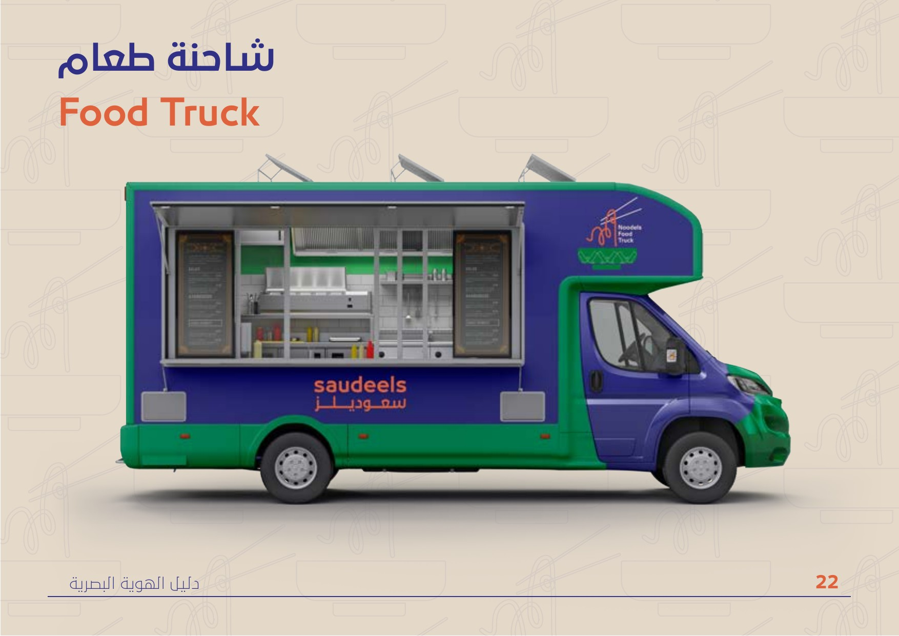
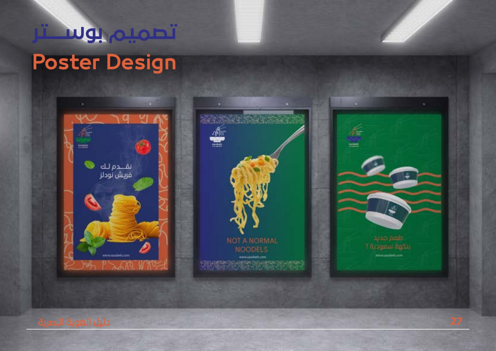
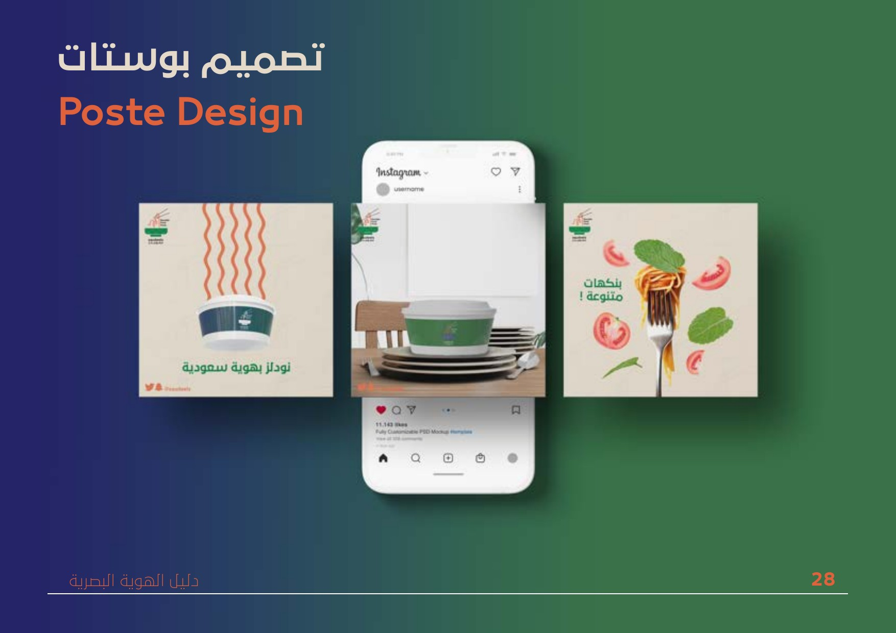

Saudeels
Saudeels · سعوديلز
هوية كاملة لعربة نودلز سعودية — شعار يجمع الثقافتين، ولوح ألوان جريء، ومنظومة بصرية تمتد من الشاحنة والتغليف حتى السوشال ميديا.
Saudeels (سعوديلز) is a Saudi noodles food truck concept that needed a brand as bold as its food. The challenge: merge local Saudi identity with the energy of Asian street food — in a visual language customers would recognize and remember from across a parking lot.
The mark pairs a stylized noodle bowl and chopsticks into a single icon that reads instantly at any size — from an app icon to a full food truck wrap. A vivid palette of deep green, indigo blue, and vermillion orange signals warmth and appetite. Typography spans Arabic and English with equal confidence, and brand patterns built from the logo elements give every touchpoint its own personality.
A fully deployed identity across every surface: the food truck exterior, noodle boxes, paper bags, chopstick sleeves, stickers, staff uniforms, posters, social media templates, menu, and a printed brochure. Every piece reinforces the same bold, appetite-forward character.


